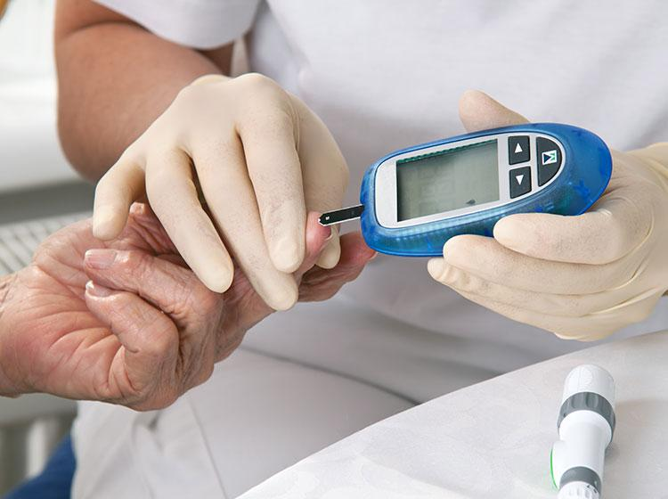

Diabetes mellitus, commonly referred to simply as diabetes, is a metabolic disease that causes high blood sugar.
The hormone insulin moves sugar from the blood into your cells to be stored or used for energy. With diabetes, your body either doesn’t make enough insulin or can’t effectively use the insulin it does make.
Untreated high blood sugar from diabetes can damage your nerves, eyes, kidneys, and other organs. But educating yourself about diabetes and taking steps to prevent or manage it can help you protect your health.
Types of Diabetes
There are a few different types of diabetes:
- Type 1: Type 1 diabetes is an autoimmune disease. The immune system attacks and destroys cells in the pancreas, where insulin is made. It’s unclear what causes this attack.
- Type 2: Type 2 diabetes occurs when your body becomes resistant to insulin, and sugar builds up in your blood. It’s the most common type—about 90% to 95%Trusted Source of people living with diabetes have type 2.
- Gestational: Gestational diabetes is high blood sugar during pregnancy. Insulin-blocking hormones produced by the placenta cause this type of diabetes.
Symptoms of Diabetes
Diabetes symptoms are caused by rising blood sugar.
The general symptoms of diabetes include:
- increased hunger
- increased thirst
- weight loss
- frequent urination
- blurry vision
- extreme fatigue
- sores that don’t heal
Preventing Diabetes
Type 1 diabetes is not preventable because it’s caused by an issue with the immune system. Some causes of type 2 diabetes, such as your genes or age, aren’t under your control either.
Yet many other diabetes risk factors are manageable. Most diabetes prevention strategies involve making simple adjustments to your diet and fitness routine.
If you’ve received a diagnosis of prediabetes, here are a few things you can do to delay or prevent type 2 diabetes:
- Get at least 150 minutes per week of aerobic exercise, such as walking or cycling.
- Cut saturated and trans fats, along with refined carbohydrates, out of your diet.
- Eat more fruits, vegetables, and whole grains.
- Eat smaller portions.
- Try to lose 5% to 7%Trusted Source of your body weight if you have overweight or obesity.
These aren’t the only ways to prevent diabetes. Discover more strategies that may help you avoid this chronic health condition.
we need to consult endocrinologist.
Medicines
- Insulin.
- Short-acting insulin.
- Rapid-acting insulins
- Amylinomimetic drug
- Alpha-glucosidase inhibitors
- Biguanides.
- Dopamine agonist.
- Meglitinides.
previous
next